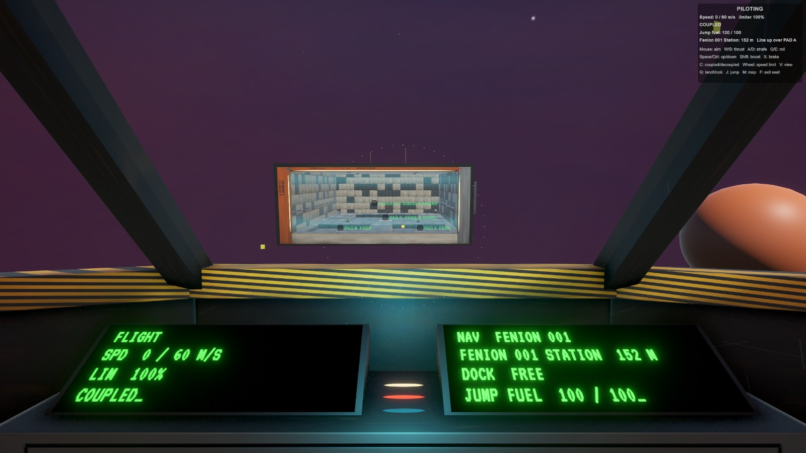
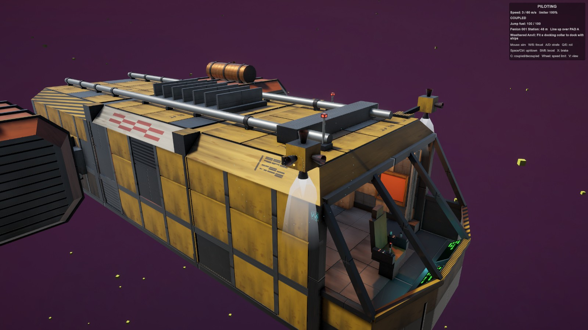
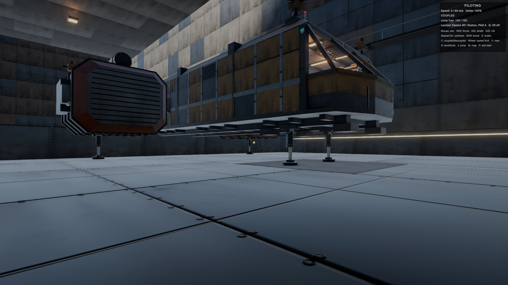
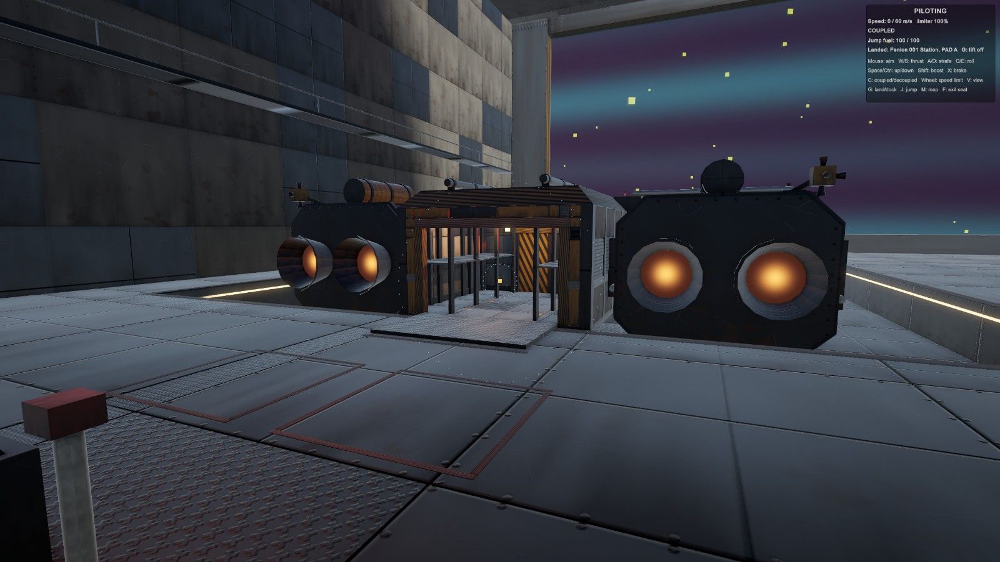
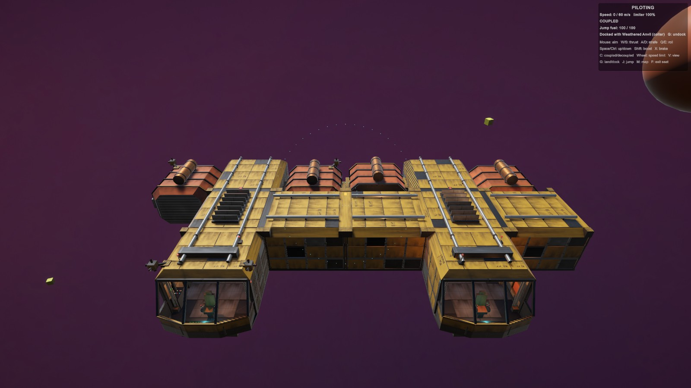
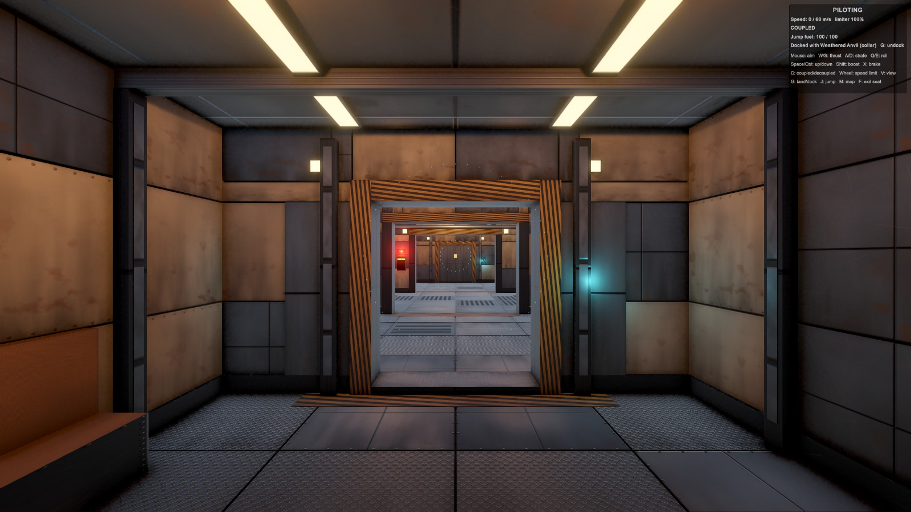
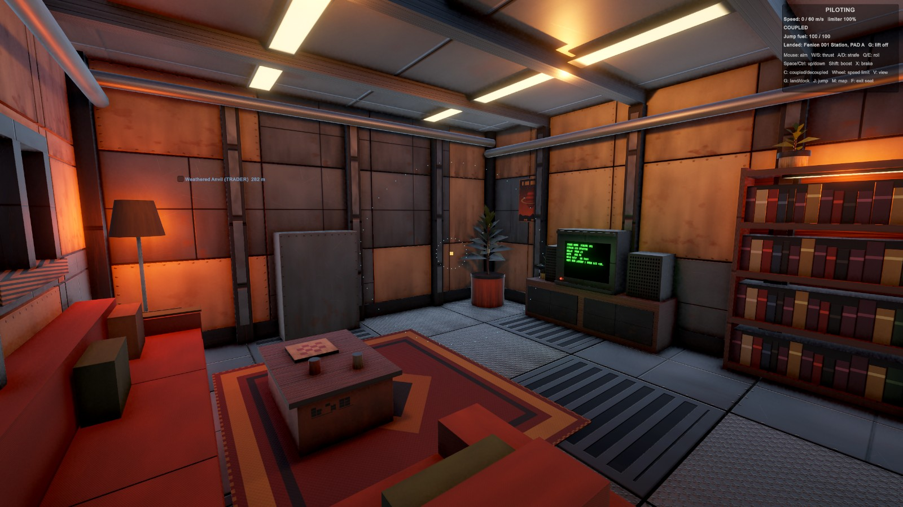

2026-11-25
Stellar Hearth is a spaceship game I'm making in Unity. You build your own ship room by room, fly it between star systems, trade cargo and live on board. The ship is a home as much as a vehicle: there's a lounge with a telly, a galley, bunks and a hydroponics bay. It's early and not playable outside my computer yet, but most of the core loop now works.
The video is the game's built-in showcase playing everything in turn: flight, landing in a station hangar, docking with another ship, and a jump to another system.

Flying
You fly from a cockpit seat, with a chase camera if you prefer. There are main engines, boost, strafing and a space brake. Four little thruster blocks on the corners of the hull puff cold gas whenever the ship turns, nudges or stops a spin. They fire the nozzles that would actually push the ship that way.


Stations and Landing
Every system has a station, and stations are hangars you fly into through a glowing force field. Hover over a free pad, press G, and the ship touches down with its landing legs on the pad and its cargo ramp on the apron. Hulls are solid, so clipping the station stops you dead (no damage, though).


Trading
Cargo is physical: 1.5 m containers you carry with a grav-lifter between your cargo bay and the station's pads. Each station has a couple of cheap exports and a couple of well-paid imports, so the game is finding a good run and hauling it. A galaxy map shows where you can jump and what each station buys and sells.
Docking With Other Ships
A friendly trader parks beside every station. Fit a docking collar to your ship, come alongside, and the ship flies itself in on its thrusters: it lines up, closes in, then creeps the last few metres to contact. Docked ships sit side by side facing the same way, so that later, with friends, two docked ships can fly together. Open the hatches and walk straight aboard to use the trader's market.


Building the Ship
The ship is a grid of modules: cockpit, airlock, cargo bay, corridors, rooms and living quarters. You build them in place from inside or outside the ship. They cost credits, and a new room has to connect to the rest of the ship through a doorway. The living rooms all do something:
- Hydroponics grows a crate of food every jump
- The galley serves meals when you're landed at a station
- The bunks save the game
- Engineering cuts the fuel cost of jumps
- The lounge telly shows the best trade run from where you are

How It's Made
- Unity 6 with the Universal Render Pipeline
- Every ship part, the station and the containers are modelled by Python scripts in Blender. One shared style file sets the colours, trim, sizes and wear, so new parts match the rest of the ship
- The universe moves around the ship rather than the other way round, so you can walk about inside while it flies
- There's a lot of automated testing (about 500 tests), plus the showcase in the video, which plays each feature through the real game systems so I can watch it work
What's Next
- Other ships flying about: traffic landing at stations, and a comms channel with chatter from station control
- Proper planets and nicer skies
- Generators, so a big ship can power all its rooms
- Eventually co-op, so friends can bring their own ships and dock together